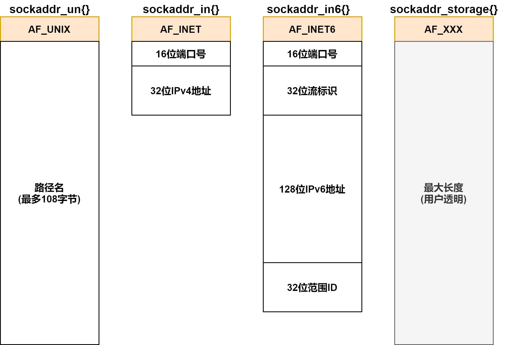
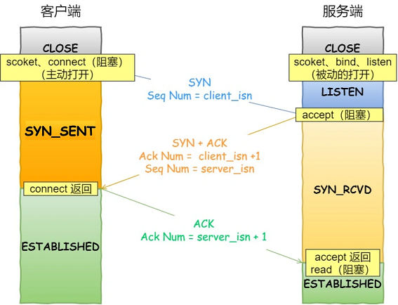
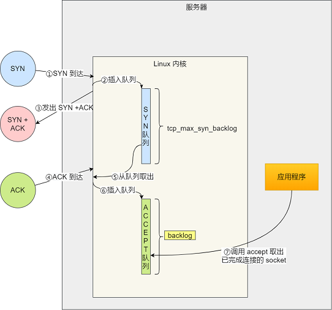

套接字基础¶
《Linux高性能服务器编程》 - 游双 的第5章，以及《UNIX网络编程卷1》 - 第三版 的第3、4、7、11章的读书笔记，本文中的所有代码可在GitHub仓库中找到
套接字地址¶
大多数套接字都需要一个指向套接字地址结构的指针作为参数。每个协议都定义了它自己的套接字地址结构：
| 协议族 | 地址族 | 结构体 | 地址含义和长度 |
|---|---|---|---|
| PF_UNIX | AF_UNIX | sockaddr_un |
UNIX本地域协议，文件的路径名，长度可达108字节 |
| PF_INET | AF_INET | sockaddr_in |
TCP/IPv4协议，16bit端口号和32bit IPv4地址，共6字节 |
| PF_INET6 | AF_INET6 | sockaddr_in6 |
TCP/IPv6协议，16bit端口号，32bit流标识，128bit IPv6地址，32bit范围ID，共26字节 |
通用socket地址¶
#include <bits/socket.h>
// 通用套接字地址类型
// sa_family - 地址族类型
// 套接字函数需要支持不同协议族的套接字地址结构，因此定义了通用地址结构`sockaddr`以接受任何协议的指针参数。
// 例如，`int bind(int, struct sockaddr *, socklen_t)`函数的第二个参数接受IPv4协议地址时，需要如下强制转换：
// struct sockaddr_in serv;
// bind(sockfd, (struct sockaddr *)&serv, sizeof(serv));
struct sockaddr
{
sa_family_t sa_family;
char sa_data[14];
}
// 14字节的`sockaddr.sa_data`不足以容纳多数协议族的地址值，因此Linux定义了`sockaddr_storage`用于真正的存储空间
struct sockaddr_storage
{
sa_family_t sa_family;
unsigned long int __ss_align;
char __ss_padding[128-sizeof(__ss_align)];
}
不同套接字地址结构的比较如下：

IPv4 socket地址¶
TCP/IPv4协议族的socket地址结构sockaddr_in如下：
struct sockaddr_in
{
sa_family_t sin_family; // 地址族：AF_INET
u_int16_t sin_port; // 端口号，要用网络字节序(大端)表示
struct in_addr sin_addr;// IPv4地址结构体
};
struct in_addr
{
u_int32_t s_addr; // IPv4地址，要用网络字节序(大端)表示
};
人们习惯用字符串来表示IP地址，下面的函数可用于“用点分十进制字符串表示的IPv4地址”和“用网络字节序整数表示的IPv4地址”之间的转换：
#include <arpa/inet.h>
// 将用点分十进制字符串的IPv4地址转换为网络字节序整数表示的地址
in_addr_t inet_addr(const char* strptr);
// 和inet_addr功能一样，但将结果存于inp指向的结构中，成功返回1
int inet_aton(const char* cp, struct in_addr* inp);
// 将网络字节序整数表示的IPv4地址转化为用点分十进制字符串的IPv4地址
char* inet_ntoa(struct in_addr in);
// inet_aton的通用版本，也可用于IPv6的地址转换
int inet_pton(int af, const char* src, void* dst);
// inet_ntoa的通用版本，也可用于IPv6的地址转换，成功返回指向dst的指针
const char* inet_ntop(int af, const void* src, char* dst, socklen_t cnt);
例子"addr_conv"利用上面的函数，完成了IPv4字符串地址和网络字节地址的转换：
#define IP_STR "192.0.2.33"
int main()
{
struct sockaddr_in sa;
char str[INET_ADDRSTRLEN];
memset(&sa, 0, sizeof(sa));
inet_pton(AF_INET, IP_STR, &(sa.sin_addr));
inet_ntop(AF_INET, &(sa.sin_addr), str, INET_ADDRSTRLEN);
printf("[inet_pton/inet_ntop] convert between %d and %s\n", sa.sin_addr.s_addr, str);
memset(&sa, 0, sizeof(sa));
inet_aton(IP_STR, &(sa.sin_addr));
// ip指向inet_ntoa内部的一个静态变量，因此inet_ntoa不可重入
char* ip = inet_ntoa(sa.sin_addr);
printf("[inet_addr/inet_aton/inet_ntoa] convert between %d(%d) and %s\n", inet_addr(IP_STR), sa.sin_addr.s_addr, ip);
return 0;
}
> ./main
[inet_pton/inet_ntop] convert between 553779392 and 192.0.2.33
[inet_addr/inet_aton/inet_ntoa] convert between 553779392(553779392) and 192.0.2.33
名字与地址的转换¶
Linux提供了getaddrinfo()和getnameinfo()用于主机名和IP地址之间的转换：
#include <netdb.h>
// 根据主机名/服务名，获得主机或者服务的地址信息，是对`gethostbyname`和`getservbyname`的封装
// hints - 可设置ai_flags, ai_family, ai_socktype, ai_protocol，其他必须为NULL
// res - 返回的查询结果，由于一个主机名可能对应多个IP地址，因此res是一个链表
int getaddrinfo(const char *restrict node,
const char *restrict service,
const struct addrinfo *restrict hints,
struct addrinfo **restrict res);
// 销毁`getaddrinfo`返回的res
void freeaddrinfo(struct addrinfo *res);
// hints和返回结果的结构
struct addrinfo
{
int ai_flags; // 控制`hints`行为，如配置为`AI_CANONNAME`，会返回主机名
int ai_family; // 地址簇，AF_INET/AF_INET5/AF_UNIX
int ai_socktype; // 服务类型，SOCK_STREAM/SOCK_DGRAM
int ai_protocol; // 网络协议，通常为零，需要和`ai_family`的值配套
socklen_t ai_addrlen;
char* ai_canonname; // 主机的别名
struct sockaddr* ai_addr;
struct addrinfo* ai_next;
};
// 根据主机/服务地址信息，获得以字符串表示的主机/服务名，是对`gethostbyaddr`和`getservbyport`的封装
int getnameinfo(const struct sockaddr *restrict addr, socklen_t addrlen,
char *restrict host, socklen_t hostlen,
char *restrict serv, socklen_t servlen, int flags);
例子"addr_name"利用上面的函数，完成了主机名和IP地址之间的转换：
#define TEST_HOSTNAME "www.baidu.com"
#define TEST_IP "142.250.194.100"
void test_getaddrinfo()
{
printf("[getaddrinfo]: %s\n", TEST_HOSTNAME);
struct addrinfo hints;
struct addrinfo *result;
memset(&hints, 0, sizeof(struct addrinfo));
hints.ai_flags = AI_CANONNAME; // 配置返回主机名到第一个结果中，否则不返回主机名
hints.ai_family = AF_INET;
hints.ai_socktype = SOCK_STREAM;
getaddrinfo(TEST_HOSTNAME, NULL, &hints, &result);
printf(" Host name: %s\n", result->ai_canonname);
printf(" Address type: %s\n", (result->ai_family == AF_INET) ? "AF_INET" : "Unknown");
char str[INET_ADDRSTRLEN];
printf(" Address(es): ");
for (struct addrinfo *rp = result; rp != NULL; rp = rp->ai_next)
{
struct sockaddr_in *p_sockaddr = (struct sockaddr_in *)rp->ai_addr;
inet_ntop(rp->ai_family, &(p_sockaddr->sin_addr), str, INET_ADDRSTRLEN);
printf(" %s", str);
}
printf("\n");
freeaddrinfo(result);
}
void test_getnameinfo()
{
struct sockaddr_in sa;
memset(&sa, 0, sizeof(sa));
sa.sin_family = AF_INET;
inet_aton(TEST_IP, &(sa.sin_addr));
printf("[getnameinfo]: %s\n", inet_ntoa(sa.sin_addr));
char host[NI_MAXHOST];
getnameinfo((struct sockaddr *)&sa, sizeof(struct sockaddr), host, NI_MAXHOST, nullptr, 0, NI_NAMEREQD);
printf(" Host name: %s\n", host);
}
> ./main
[getaddrinfo]: www.baidu.com
Host name: www.wshifen.com
Address type: AF_INET
Address(es): 104.193.88.77 104.193.88.123
[getnameinfo]: 142.250.194.100
Host name: del12s04-in-f4.1e100.net
套接字编程¶
TCP套接字¶

如上图所示，客户端和服务端经过一些列的socket API调用，最终各自拥有了一个可以读写的文件描述符。此后，就可以通过read/write函数像访问文件一样，在客户端和服务器之间进行数据的传输。同时，服务端不仅创建了一个和客户端连接的socket，还打开了一个监听socket，用于监听新的客户端连接。
例子"tcp_sc"实现了客户端向服务端传递"Hello World"字符串的功能：
int main(int argc, char *argv[])
{
...
printf("[Server] Start server at %s:%d\n", ip, port);
struct sockaddr_in address;
bzero(&address, sizeof(address));
address.sin_family = AF_INET;
inet_pton(AF_INET, ip, &address.sin_addr);
address.sin_port = htons(port);
// 1. create server socket
int sock = socket(AF_INET, SOCK_STREAM, 0);
// 2. bind server socket to the address and port
bind(sock, (struct sockaddr *)&address, sizeof(address));
// 3. listen at client's connection
listen(sock, 5);
struct sockaddr_in client;
socklen_t client_len = sizeof(client);
printf("[Server] Waiting for connection...\n");
// 4. accept a connection from client, and create connection socket
int connfd = accept(sock, (struct sockaddr *)&client, &client_len);
printf("[Server] Connection %d is created\n", connfd);
// 5. read/write with connection socket
char buffer[BUFFER_SIZE];
memset(buffer, '\0', BUFFER_SIZE);
printf("[Server] Dump data from client...\n");
while (1)
{
int n_bytes = read(connfd, buffer, BUFFER_SIZE - 1);
if (n_bytes == 0)
{
printf("\n[Server] Remote client socket was closed\n");
break;
}
for (int i = 0; i < n_bytes; i++)
printf("%c", buffer[i]);
}
printf("[Server] Close connection %d and listen socket %d\n", connfd, sock);
close(connfd);
close(sock);
return 0;
}
> ./server 127.0.0.1 1234
[Server] Start server at 127.0.0.1:1234
[Server] Waiting for connection...
[Server] Connection 4 is created
[Server] Dump data from client...
Hello World
[Server] Remote client socket was closed
[Server] Close connection socket 4 and listen socket 3
int main(int argc, char *argv[])
{
...
printf("[Client] Connect to server %s:%d\n", ip, port);
sockaddr_in server_address;
bzero(&server_address, sizeof(server_address));
server_address.sin_family = AF_INET;
inet_pton(AF_INET, ip, &server_address.sin_addr);
server_address.sin_port = htons(port);
// 1. create client socket
int sock = socket(AF_INET, SOCK_STREAM, 0);
// 2. connect to server address and port
connect(sock, (struct sockaddr *)&server_address, sizeof(server_address));
printf("[Client] Connected socket %d to the server\n", sock);
// 3. read/write with the client socket
char buffer[] = "Hello World";
printf("[Client] Send '%s' to server\n", buffer);
send(sock, buffer, sizeof(buffer), 0);
printf("[Client] Close the socket %d\n", sock);
close(sock);
return 0;
}
> ./client 127.0.0.1 1234
[Client] Connect to server 127.0.0.1:1234
[Client] Connected socket 3 to the server
[Client] Send 'Hello World' to server
[Client] Close the socket 3
socket连接和三次握手¶
"TCP/IP协议"一文中介绍了TCP连接的“三次握手”过程。那么，通过socket API创建TCP连接的过程和“三次握手”的对应关系是如何的？函数调用过程中socket的状态又是怎么变化的？下图给出了答案：

“三次握手”过程发生在connect()和accept()的阻塞调用过程中：
connect()的调用发起第一次握手动作，并将客户端socket状态变为SYN_SENT状态accept()接收到第一次握手动作后，会创建一个SYN_RCVD状态的服务端socket到由内核维护的SYN队列中，并发送第二次握手动作connect()收到第二次握手动作后，将客户端socket状态变为ESTABLISHED，并发送第三次握手动作accept()收到第三次握手动作后，将服务端socket从SYN队列中取出，放入ACCEPT队列中，并将状态变成ESTABLISHED- 最后应用程序从
ACCEPT队列中取出已完成连接的服务端socket

上图是从Linux内核的角度，看accept()创建服务端连接的过程。在TCP三次握手的时候，Linux内核会维护两个队列（详情可参考文档）：
- 半连接队列，也称
SYN队列- 最大长度由
/proc/sys/net/ipv4/tcp_max_syn_backlog决定
- 最大长度由
- 全连接队列，也称
ACCEPT队列- 最大长度由
listen()的第二个参数backlog决定
- 最大长度由
通过对例子"tcp_sc"的调试，我们可以得到客户端connect()调用前后套接字的状态：
- 客户端
connect()调用前- 服务端阻塞在
accept()调用，只存在一个服务端的LISTEN Socket(port:1234)
- 服务端阻塞在
- 客户端
connect()调用后- 客户端创建了一个
ESTABLISHED Socket(port:38192) - 服务端创建了一个
ESTABLISHED Socket(port:1234)
- 客户端创建了一个
# client connect调用之前，只存在一个监听socket
> sudo netstat -ntap | grep -e 'server' -e 'client'
tcp 0 0 127.0.0.1:1234 0.0.0.0:* LISTEN 12773/./server
# client connect调用之后，多了两个ESTABLISHED状态的socket
> sudo netstat -ntap | grep -e 'server' -e 'client'
tcp 0 0 127.0.0.1:1234 0.0.0.0:* LISTEN 12773/./server
tcp 0 0 127.0.0.1:1234 127.0.0.1:38192 ESTABLISHED 12773/./server
tcp 0 0 127.0.0.1:38192 127.0.0.1:1234 ESTABLISHED 13720/client